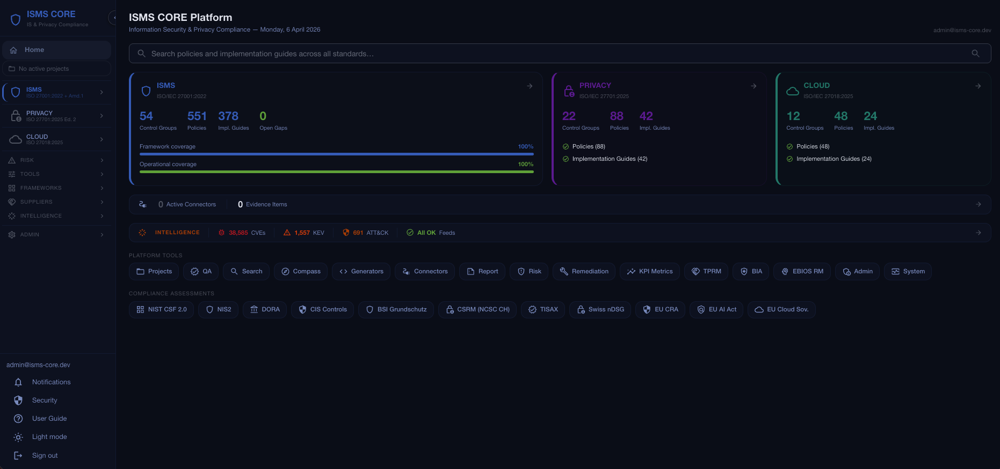
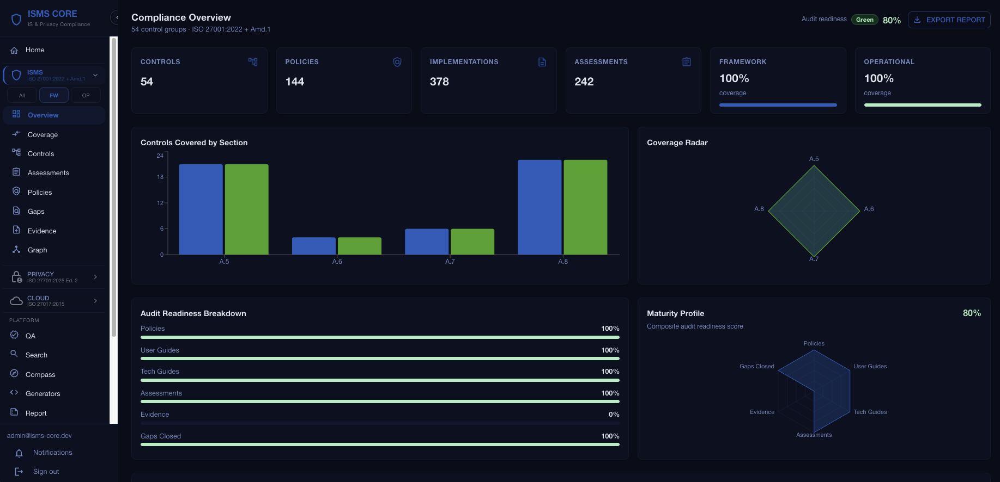
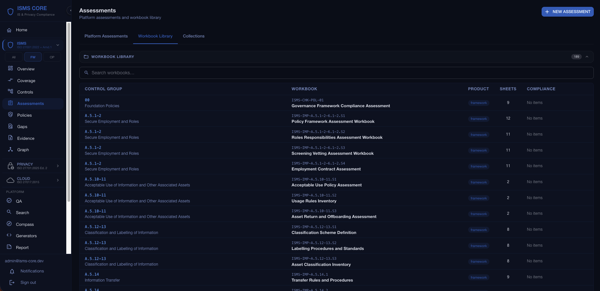
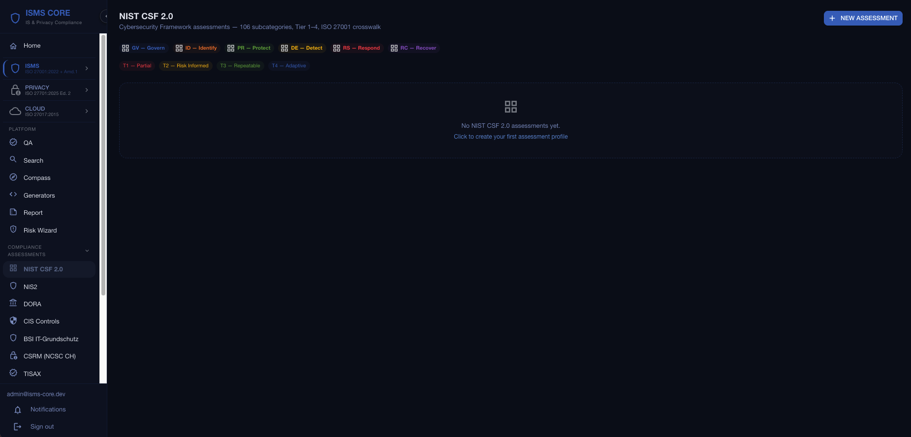
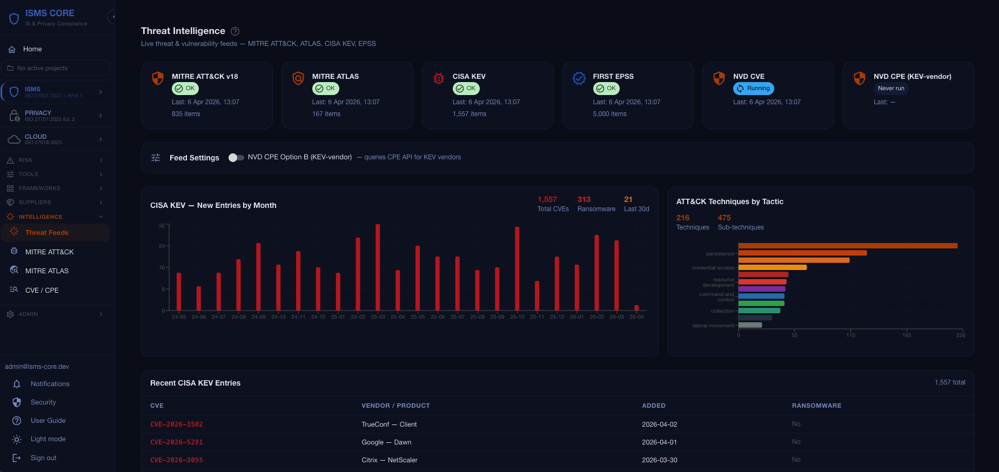
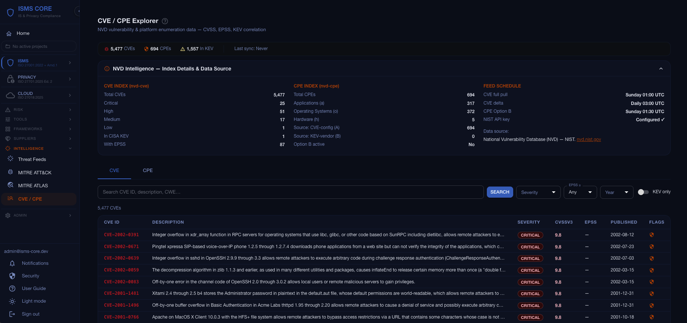

Compliance Operations, Risk & Evidence
Grows fast. Bends, doesn't break. Built to last.
ISMS CORE has five products. You don't need all of them — pick what fits your situation.
You want clear, practical policies and a simple compliance checklist — not a 400-page engineering framework. You need to get certified without a dedicated security team.
53 operational policies + single-sheet compliance checklists. Get certified in weeks, not months.
You want the full SSE product — policies with implementation depth, separate technical and governance guides, multi-sheet assessment workbooks, and end-to-end traceability.
53 control packs, 253 Python generators, 504 implementation documents. Every control engineered, not just listed.
You already have (or want) ISMS content, but need gap tracking, evidence automation, cross-framework mapping, and audit management in one tool — self-hosted, no subscriptions.
Docker-based, self-hosted. Ingests all five products. 44 automated connectors. 25 compliance assessment modules. Multi-jurisdiction policy rendering.
Privacy (ISO 27701), Cloud (ISO 27018), and AI (ISO 42001) products extend any path — add them when you need privacy, cloud PII, or AI management system controls on top of your ISO 27001 base.
A production-grade compliance platform that treats ISMS implementation as an engineering problem, not a consulting exercise. Five products across four ISO standards — one platform, one pipeline.
For mature security teams and consultants
For SMEs and startups (10–500 people)
Privacy information management — controller & processor roles
PII protection in public cloud — for cloud service providers
AI management system governance — for AI developers & deployers
ISO 27001:2022 requires documented policies and evidence for 93 Annex A controls across 53 groups. Most organisations spend months writing them from scratch — or pay a consultant to do it.
ISMS CORE ships the finished work: 570+ implementation documents, 53 policies, 53 assessment workbooks — already written to ISO 27001:2022 standard, in English, French, German, and Italian. You adapt your organisation name, your CISO, your legal entity. The auditable content is done.
These are not templates with fill-in-the-blank placeholders. They are complete, QA-verified documents that passed internal audit review. Use them as-is or adapt them — the choice is yours.
ISO 27001:2022, ISO 27701:2025 (Privacy), ISO 27018:2025 (Cloud), and ISO 42001:2023 (AI) — all in a single integrated compliance system.
Python generators produce structured assessment workbooks and compliance checklists — not static Word templates.
Mapped to NIST CSF 2.0, MITRE ATT&CK, GDPR, Swiss nDSG, DORA, NIS2, EU AI Act and more.
Start with ISMS Operational. Add Framework depth, Privacy extension, and Cloud controls as you grow — all use the same pipeline.
All policies available in English, French, German, and Italian — across all five products. Country-specific regulatory tokens applied at render time for 8 jurisdictions.
"The first principle is that you must not fool yourself — and you are the easiest person to fool." — Richard Feynman
If attackers are the "planes," cargo cult ISMS won't stop them. Only real controls will. ✈️
All four ISO standards fully implemented and live on the platform.
Comprehensive mapping to industry standards and regulations.
Full Annex A coverage — 53 control packs, 93 controls
Implementation guidance integrated into all IMP-TG documents
Privacy information management — 21 control groups for controller, processor, and shared roles
PII protection in public cloud — 12 Annex A control groups for cloud service providers
AI management system — 12 control groups for AIMS governance, impact assessment, responsible use, and third-party AI relationships
AI system impact assessment — AISIA methodology structured into the A.5.2-5 implementation guide; risk assessment lifecycle, harm identification, and mitigation planning. 23 crosswalk mappings to NIST AI RMF + OECD AI Principles.
Five principles for trustworthy AI — Inclusive Growth (P1), Human-centred Values (P2), Transparency (P3), Robustness & Safety (P4), Accountability (P5). Adopted by 46+ countries, referenced in the EU AI Act preamble. ISO 42001 ↔ OECD crosswalk: 14 mappings.
106 subcategories across 6 functions — tier 1–4 ratings, radar chart, XLSX import/export
72 subcategories across 4 functions (GOVERN/MAP/MEASURE/MANAGE) — AI risk management, maturity 0–4. EU AI Act crosswalk.
324 base controls across 20 families — US federal/DoD/FedRAMP baseline. OSCAL sourced. ISO 27001 crosswalk via SP 800-53B.
15 requirements — Article 21 security measures + Article 23 reporting obligations, maturity 0–4
25 articles across 4 chapters — ICT Risk, Incident Mgmt, Resilience Testing, Third-Party Risk, maturity 0–4
153 safeguards across 18 controls — maturity 0–4
68 Bausteine across 10 layers — maturity 0–4. Plus 269 ISO↔BSI crosswalk mappings across three ISO standards.
Object-centric model — IT Protection Objects, 20 NIST CSF 2.0 baseline requirements, binary status (met/partial/not_met)
53 requirements across 12 domains — automotive supply chain readiness, maturity 0–4
27 requirements across 8 sections — Federal Act on Information Security, 24h cyberattack reporting to BACS/OFCS (in force Apr. 2025), maturity 0–4
25 provisions across 6 chapters — Federal Act on Data Protection, maturity 0–4
26 requirements across 6 groups — product cybersecurity for EU market (2024/2847), maturity 0–4
25 articles across 6 groups — high-risk AI obligations incl. Risk Mgmt, Transparency, Human Oversight, maturity 0–4
8 Sovereignty Objectives (SOV-1–8) scored via SEAL-0 to SEAL-4 — weighted Sovereignty Score for EU cloud procurement
41 NIST CSF 2.0 aligned practices — Belgian NIS2 transposition, maturity 0–4. 107 ISO crosswalk mappings.
23 requirements across 12 IT modules — German financial sector supervisory circular, maturity 0–4.
19 ICT risk requirements across 7 domains — Luxembourg financial sector, maturity 0–4.
19 cyber risk guidelines — Italian National Cybersecurity Agency, maturity 0–4.
13 requirements across 3 objectives — UK network and information systems operators, maturity 0–4.
12 requirements — important business services, impact tolerances, FCA/PRA PS21/3 + PS26/2, maturity 0–4.
41 Contributing Outcomes across 14 Principles and 4 Objectives — UK NCSC outcome-based cyber assessment. Not Achieved / Partially Achieved / Achieved.
20 Security Objectives across 4 pillars (Gouvernance, Protection, Défense, Résilience) — ANSSI French NIS2 transposition (Loi 2024-449). 152 requirements. EE/EI scoping.
40 governance and management objectives across 5 domains (EDM, APO, BAI, DSS, MEA) — capability levels 0–4.
207 controls across 17 domains — cloud security baseline for CSA STAR Level 1/2/3. Maps to NIST 800-53, PCI DSS, SOC 2, GDPR.
243 controls across 18 domains — AI-specific security and governance. Maps to ISO 42001, EU AI Act, NIST AI RMF, BSI AI C4.
Security control cross-mapping via Crosswalk Viewer
697 techniques · 174 threat actor groups · 821 software (malware + tools) · 56 campaigns · Navigator-style heatmap
Data protection, payment card, and Swiss financial regulation cross-mappings
EU Vulnerability Database — exploited flag, EU-assigned CVEs, CVSS 4.0 support. Indexed to OpenSearch, cross-enriched against NVD CVE with in_euvd flag. EUVD Explorer + A.8.8 audit evidence.
Policies render with country-specific regulatory references, authority names, and law citations — applied at request time. No policy clones. Learn more →
Audience, scope, known limitations, and official source documents for each framework
A Docker-first compliance management platform that ingests your static files and presents them as a live, correlated compliance system. Files work without the platform. The platform is the premium layer that adds multi-standard dashboards, cross-framework correlation, vector search, and audit management — across all four ISO standards in a single UI.
docker compose up -d
Self-hosted · No cloud · No subscriptions · Your data stays yours · Production: nginx TLS (HTTPS)
Four ISO standards on one screen — ISO 27001:2022 (53 Annex A control groups), ISO 27701:2025 (Privacy), ISO 27018:2025 (Cloud), ISO 42001:2023 + ISO 42005:2025 (AI). Composite audit readiness score combines policy coverage, live evidence, assessment maturity across 25 frameworks, and open gap count. Section-level bar charts show exactly where you stand before an auditor asks.
OpenSearch-powered search across the entire ISMS CORE library — policies, 570+ implementation guides, and 5,200+ extracted requirements spanning all five products: ISMS Framework, Operational, Privacy (ISO 27701:2025), Cloud (ISO 27018:2025), and AI (ISO 42001:2023 + ISO 42005:2025). Highlighted results with relevance ranking, product filter (ISMS / Privacy / Cloud / AI), and document type filter. Find any control requirement, implementation step, or audit evidence in seconds across four ISO standards.
Already have policies? Do not throw them away. Import existing documents in PDF, DOCX, or Markdown — no reformatting required. Run the same four-layer QA analysis that validates ISMS CORE's own library: keyword coverage, semantic similarity against 45 normative standards, and Claude AI gap analysis. See exactly which ISO 27001 topics your current policies are missing before an auditor does. The gap report tells you what to fix; the platform shows you the Gold Standard to fix it against.
You complete your ISO 27001 gap assessment. Your board asks for NIST CSF 2.0 alignment. Your auditor needs NIS2 equivalence. Your CISO wants your DORA posture. Without a crosswalk, each is a separate project — weeks of manual mapping per framework. ISMS CORE ships 3,433 pre-built crosswalk objects across 44 framework pairs, built control by control over months. Every gap finding and every evidence item automatically inherits its multi-framework context. No re-work.
NIST CSF 2.0 · NIST SP 800-53 R5 · NIST AI RMF 1.0 · MITRE ATT&CK v19 · MITRE ATLAS · CIS Controls v8 · NIS2 · DORA · GDPR · BSI IT-Grundschutz · FINMA · OWASP ASVS 4.0 · PCI DSS 4.0.1 · EU AI Act · EU CRA · NCSC CAF v4.0 · ReCyF v2.5 · CSA CCM v4.1 · CSA AICM v1.0.3 · OECD AI Principles · Swiss nDSG · Swiss ISG · TISAX / VDA ISA · CyberFundamentals BE · COBIT 2019
ISO 27701:2025 ↔ GDPR · NIS2 · NIST CSF 2.0 · BSI IT-Grundschutz · ISO 27001
ISO 27018:2025 ↔ ISO 27001 (12 control group mapping)
ISO 42001:2023 ↔ EU AI Act · NIST AI RMF 1.0 · ISO 27001 · BSI · OECD AI Principles
ISO 42005:2025 ↔ NIST AI RMF 1.0 · OECD AI Principles · EU AI Act · ISO 42001
MITRE ATT&CK v19: 697 techniques mapped to ISO 27001 controls — Navigator-style heatmap in the platform
Full CRUD for compliance gaps (severity, owner, due date, remediation plan). BSI 200-3 automatic risk calculator: likelihood × impact matrix, pre-mapped threat codes per ISO section, risk treatment tracking. Evidence tracker with expiry alerts, file download, and verification workflow.
Create named projects that own a curated subset of your policies, implementation guides, assessments, gaps, and evidence. Document variables (organisation name, CISO, effective date, legal entity) auto-substituted on add. WYSIWYG editor with source toggle for in-platform policy editing. Bulk actions, bin/restore, completeness scoring, and SCR checklist tracking — all scoped to the project.
Interactive Cytoscape.js graph of 229 intra-ISO-27001 relationships (depends-on, enables, feeds-into). Filter by section, depth, and edge type. See which controls are foundational.
Most compliance platforms check whether a policy document exists. ISMS CORE runs four independent verification layers on every document — automatically, against 45 normative standards indexed into a semantic search corpus. The result is not just "file found" — it is a precise gap report showing which ISO topics are covered, which are weak, and which are missing entirely, with AI-generated reasoning and missing-topic chips you can act on immediately.
Stage 1 — Existence: Does the document exist? ISO 27001 Stage 1 audit proxy — a mandatory first gate.
Stage 2 — Keyword coverage: Does it contain the required ISO terminology and control references?
Stage 3 — Semantic similarity: Does the content actually cover the right topics? OpenSearch cosine similarity against a normative corpus of 45 standards, 5,000+ indexed chunks — ISO 27001/27002/27701/27018/42001, NIST 800-series, GDPR, DORA, NIS2, PCI DSS, OWASP, MITRE ATT&CK and more.
Stage 4 — Claude AI gap analysis: What is specifically missing? AI-generated reasoning, missing-topic chips, and actionable remediation guidance.
Any ISMS CORE policy, implementation guide, or external document (PDF, DOCX, Markdown). Scope by product (Framework / Operational / Privacy / Cloud / AI) or by ISO 27001 control reference. Run against the full corpus or a targeted subset. Compare your existing policies against the Gold Standard before an auditor does. Batch analysis across all 53 control groups in a single run. Multi-select framework codes to cross-check a document against multiple standards simultaneously.
Built-in assessment tools for NIST CSF 2.0, NIST SP 800-53 R5, NIST AI RMF 1.0, NIS2, DORA, CIS Controls v8, BSI IT-Grundschutz, CSRM (Swiss NCSC — object-centric, binary), TISAX, Swiss ISG (SR 128), Swiss nDSG, EU Cyber Resilience Act, EU AI Act, EU Cloud Sovereignty Framework (SEAL-0 to SEAL-4), CyberFundamentals BE, BaFin BAIT, CSSF LU, ACN IT, UK NIS, UK Op. Resilience, NCSC CAF v4.0, ReCyF v2.5 (France NIS2), COBIT 2019, CSA CCM v4.1, CSA AICM v1.0.3. Maturity scoring 0–4, gap tracking, notes, evidence references, and Assessment Collections (group assessments → export CSV/XLSX/PDF). Coverage details →
Six roles: Super Admin, Admin, ISMS Manager, Auditor, Control Owner, Viewer. JWT authentication with refresh tokens. Multi-organisation support — Super Admin can create and manage multiple organisations, each with isolated users, projects, and data. Admin panel for user management (including org assignment) and system health monitoring.
Project-scoped risk register with a 5×5 probability/impact matrix. Visual heatmap with colour-coded risk zones. Risk Acceptance and Remediation tracking — action plans, owner assignment, ETA tracking, and ITSM push to Jira or ServiceNow.
An auditor asks for evidence of MFA enforcement on privileged accounts. Without automation: open your IdP console, export a CSV, format it into a spreadsheet, attach a screenshot, email it — and repeat every audit cycle for every control. With ISMS CORE, you click Run on the Entra ID connector. It pulls live data, maps it to ISO 27001 A.8.2 (Privileged access rights), and stores it as timestamped, auditor-ready evidence. 44 native connectors cover every major enterprise stack.
Microsoft Entra ID · Microsoft Defender · Microsoft Sentinel · Microsoft Intune · M365 Security · Azure CSPM · AWS Security Hub · GCP Security Command Centre · CyberArk PAM · HashiCorp Vault · Active Directory · LDAP · Zscaler · PAN-OS · FortiGate · Cisco
Qualys VMDR · Tenable.io · CrowdStrike Falcon · SentinelOne · Wazuh · ServiceNow · Jira · PRTG · Graylog · Zabbix · OpenCTI · OpenAEV · Custom Python container — write your own connector in a single file, deploy as a Docker sidecar. No ELK stack required.
Nine named security KPIs with sparkline trend charts per project. Composite Audit Readiness score (%). Metrics Portfolio view for Super Admins — cross-organisation KPI comparison across all tenants.
Vendor register with DORA ICT third-party fields, contract tracking, and risk assessments. Score and track supplier risk directly in the platform — no separate spreadsheets.
Structured BCM baseline inside the platform — no separate spreadsheet. Capture RTO, RPO, and MTPD per business function, linked to the assets, processes, and ISO 27001 controls that support them. Impact scoring across financial, reputational, regulatory, and operational dimensions. Recovery priority ranking feeds directly into your risk register and gap remediation plan. Required under ISO 22301, DORA Article 11, and NIS2 Article 21 — covered in one place.
Full 5-workshop ANSSI methodology: feared events → attack paths → strategic scenarios → operational scenarios → security measures. Integrated with the risk register and remediation tracker.
Import any custom or sector-specific control framework via YAML upload. Each control maps to ISO 27001:2022 Annex A references; the platform infers coverage automatically. Use alongside the 25 built-in assessment modules.
TOTP two-factor authentication for all users — compatible with Google Authenticator and Authy. Enable per-user from System settings. Backup codes provided for device recovery.
Two dedicated feed containers pull nineteen sources on schedule. ATT&CK Heatmap, EUVD Explorer, CVE Explorer, IOC Explorer, IP Enrichment, and Malware Atlas included. IOCs cross-enriched at ingest — no runtime joins.
MITRE ATT&CK v19 (697 techniques, groups, software, campaigns), MITRE ATLAS (AI threats), CISA KEV (daily), FIRST EPSS (daily), NVD CVE (~250K entries, CVSS 4.0), NVD CPE, ENISA EUVD (EU Vulnerability Database — exploited flag, cross-enriched against NVD), Exploit-DB (~52K exploit entries, daily — EDB cross-reference and Metasploit module flag on every CVE).
CIRCL MISP + Botvrij MISP (120,000+ deduplicated IOCs), AbuseIPDB (daily top 10K abusive IPs), URLhaus (malware URLs), ThreatFox (malware IOCs), SSLBL (malicious SSL certificate fingerprints), Red Flag Domains (suspicious newly-registered domains), Stopforumspam (spammer IPs), MalwareBazaar (malware sample hashes), Feodo Tracker (C2 botnet IPs), Malpedia (malware families + threat actors).
A look at the live platform — dashboard, compliance assessments, threat intelligence, and gap tracking.

Home dashboard — ISMS · Privacy · Cloud products, 17 compliance modules, live intelligence bar, connector evidence

Compliance overview — 54 ISO 27001:2022 controls, coverage radar, audit readiness

Assessments & Collections — platform-native scoring, CSV / XLSX / PDF export

NIST CSF 2.0 — 106 subcategories, tier 1–4 ratings, function breakdown

Threat Intelligence — MITRE ATT&CK · ATLAS · CISA KEV · EPSS · NVD CVE, scheduled pulls, feed health

CVE / CPE Explorer — 342K+ CVEs, CVSS · EPSS · KEV overlay, vendor CPE filter
ISMS CORE is an open-source ISO 27001:2022 compliance management platform. It provides five products — Framework (full SSE engineering), Operational (foundation ISMS for SMEs), Privacy (ISO 27701:2025 extension), Cloud (ISO 27018:2025 extension), and AI (ISO 42001:2023 extension) — plus a self-hosted web platform for gap tracking, evidence automation, and 25 multi-framework compliance assessments.
Yes. ISMS CORE is open source under AGPL 3.0 — free to use, self-host, and modify. A commercial licence is available for organisations that need to use it without AGPL copyleft obligations.
ISMS CORE is self-hosted and open source — there is no SaaS subscription, no per-seat pricing, and no vendor lock-in. It is designed for organisations that want full control over their compliance data. It also ships with production-ready policy documents and Python-generated assessment workbooks, not just a checklist tool.
Yes. ISMS CORE covers all 93 controls across the 53 Annex A control groups of ISO 27001:2022. The Framework product provides the full policy, implementation guide, and assessment workbook stack required for a formal audit. The Operational product is designed for SMEs to achieve certification in weeks rather than months.
Beyond ISO 27001, ISMS CORE includes 25 built-in assessment modules: NIST CSF 2.0, NIST SP 800-53 Rev 5, NIST AI RMF 1.0, NIS2, DORA, CIS Controls v8, BSI IT-Grundschutz, CSRM (Swiss NCSC), TISAX, Swiss ISG (SR 128), Swiss nDSG, EU Cyber Resilience Act, EU AI Act, EU Cloud Sovereignty Framework, CyberFundamentals Belgium, BaFin BAIT, CSSF LU, ACN IT, UK NIS, UK Operational Resilience, NCSC CAF v4.0, ReCyF v2.5 (France NIS2/ANSSI), COBIT 2019, CSA CCM v4.1, and CSA AICM v1.0.3 — all mapped to ISO 27001:2022 controls.
No. The Operational product is built specifically for SMEs and startups without a dedicated security team. It uses plain-language operational policies and single-sheet compliance checklists. The Platform runs in Docker and can be deployed by any team comfortable with containers.
ISMS CORE Platform runs entirely in Docker Compose — FastAPI backend, PostgreSQL, OpenSearch, and a React (Vite + Tailwind) frontend behind nginx with TLS. It can run on a single server or NUC. No cloud vendor accounts required.
Yes — TOTP-based MFA (compatible with Google Authenticator and Authy) can be enabled per user from the System settings. Backup codes are provided in case the authenticator device is lost.
Free for open source use with copyleft requirements.
Enterprise licensing without AGPL obligations.
Built by the ISMS Core Contributors